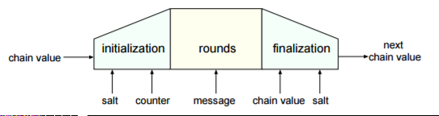

The hash function BLAKE takes a message and salt as input. The salt is either 128 or 256 bits long depending on the hash length and if for some reason it is unneeded or left unspecified, then it takes the all-zero value by default.The output from BLAKE is a 28-Byte Hash for BLAKE-224, a 32-Byte Hash for BLAKE-256, a 48-Byte Hash for BLAKE-384, and a 64-Byte Hash for BLAKE-512.
The following bitlengths are supported:How BLAKE works:
It follows the HAIFA iteration mode. The compression function depends on the salt provided and the number of bits hashed so far (counter). The compression function itself is based on LAKE, a large inner state is initialized from the IV, salt, and counter. It then gets updated by message dependent rounds. After these rounds, it gets compressed to return the next chain value.
